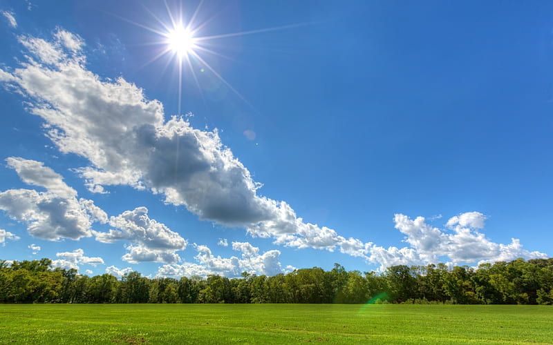
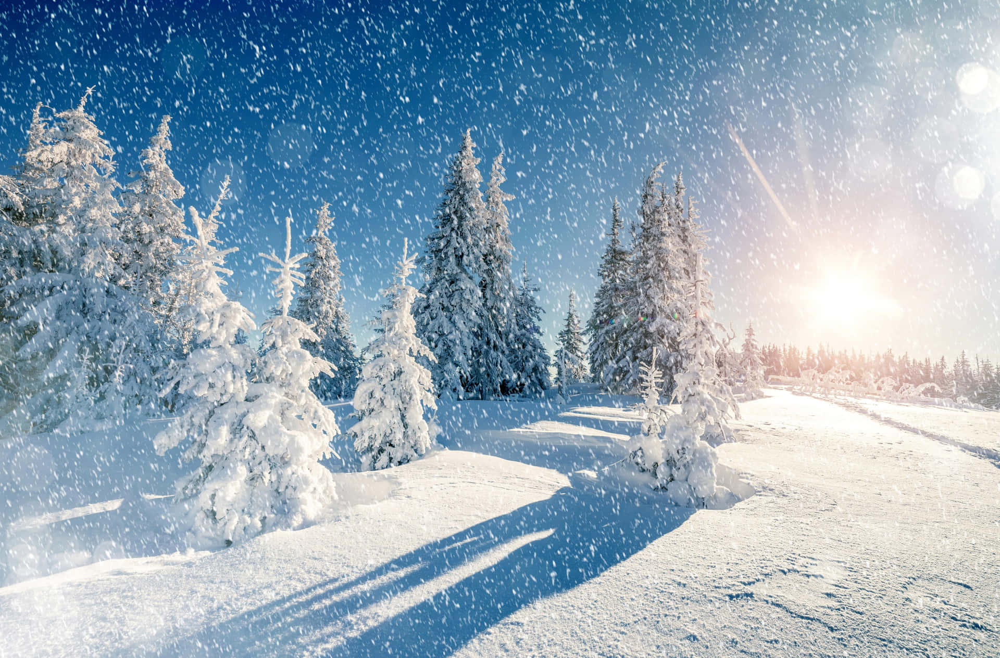

Intoduction
This is my first blog. In this, we are to look about the four seasons. A season is a division of the year based on changes in weather, ecology, and the number of daylight hours in a given region. On Earth, seasons are the result of the axial parallelism of Earth's tilted orbit around the Sun. The biggest lesson the seasons can teach us is the nature of impermanence, that things are constantly changing,” says Buttimer. You can experience numerous seasons over your lifetime – multiple springs, summers, autumns and winters. Each season can give you cues to honor your intuitive nature, she says. It could be delight to read my blog.
Summer

Summer ☀ is the hottest and brightest of the four temperate seasons, occurring after spring and before autumn. At or centred on the summer solstice, daylight hours are the longest and darkness hours are the shortest, with day length decreasing as the season progresses after the solstice. The earliest sunrises and latest sunsets also occur near the date of the solstice. The date of the beginning of summer varies according to climate, tradition, and culture. When it is summer in the Northern Hemisphere, it is winter in the Southern Hemisphere, and vice versa. Summer season starts from June and lasts till September.
Source
Autumn
Autumn🍁 is the season after summer and before winter. In the United States and Canada, this season is also called fall. In the Northern Hemisphere, it is often said to begin with the autumnal equinox in September and end with the winter solstice in December. In the Southern Hemisphere, it runs from the autumnal equinox in March to the winter solstice in June.
When it is autumn in the Northern Hemisphere, it is spring in the Southern Hemisphere. When it is autumn in the Southern Hemisphere, it is spring in the Northern Hemisphere. On the Equator, autumn is very much like spring, with little difference in temperature or in weather. Autumn is a time when most animals are looking for food so they can store up for winter, because they soon will be going into hibernation. The weather gets colder and more windy. In Autumn the hours of daylight and the hours of night are the same. In autumn the weather changes all the time. The weather turns cooler and often windy and rainy.
Source
Winter

Winter ❄, coldest season of the year, between autumn and spring; the name comes from an old Germanic word that means “time of water” and refers to the rain and snow of winter in middle and high latitudes. In the Northern Hemisphere it is commonly regarded as extending from the winter solstice (year’s shortest day), December 21 or 22, to the vernal equinox (day and night equal in length), March 20 or 21, and in the Southern Hemisphere from June 21 or 22 to September 22 or 23. The low temperatures associated with winter occur only in middle and high latitudes; in equatorial regions, temperatures are almost uniformly high throughout the year.
Source
Spring
Spring🌹, also known as springtime, is one of the four temperate seasons, succeeding winter and preceding summer. There are various technical definitions of spring, but local usage of the term varies according to local climate, cultures and customs. When it is spring in the Northern Hemisphere, it is autumn in the Southern Hemisphere and vice versa. At the spring (or vernal) equinox, days and nights are approximately twelve hours long, with daytime length increasing and nighttime length decreasing as the season progresses until the Summer Solstice in June (Northern Hemisphere) and December (Southern Hemisphere).
Source
Conclusion
Thank you for spending your valuable time in reading my blog💗